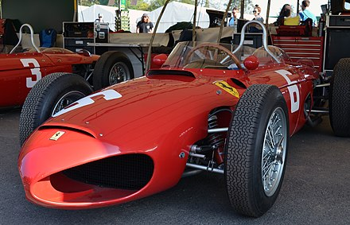
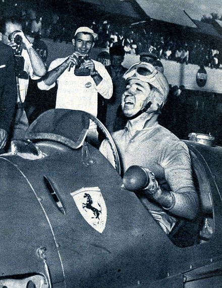
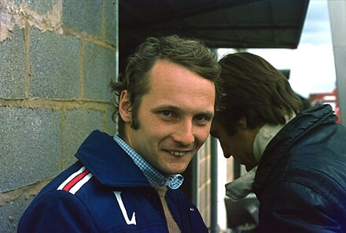
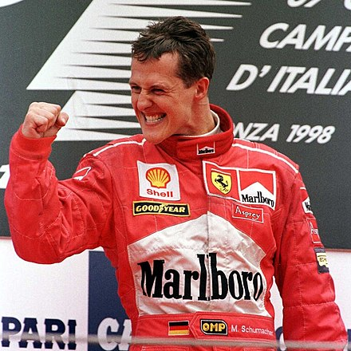

Fondata da Enzo Ferrari nel 1929, nel corso dei decenni si è imposta come una delle squadre più note e titolate
nell'automobilismo sportivo mondiale.[4][5] Ha principalmente legato il suo nome al mondiale di Formula 1, in cui
è presente fin dalla sua istituzione e in cui ha conquistato 15 volte il titolo piloti e 16 quello costruttori,
record assoluti in entrambe le categorie.[6] Ha inoltre riportato numerosi successi nelle competizioni per vetture
Sport Prototipo e Gran Turismo come il campionato del mondo sportprototipi, dove ha vinto 12 titoli costruttori,
in gare di durata come la 24 Ore di Le Mans, la 24 Ore di Daytona e la 12 Ore di Sebring, e in serie minori come
la Formula Tasman. Tra i suoi trionfi più prestigiosi annovera le vittorie nelle tre maggiori competizioni mondiali
su tracciato stradale, ovvero la Targa Florio, la Mille Miglia e la Carrera Panamericana.

Dal 1929 al 1937 è stata allestita dalla S.A. Scuderia Ferrari, che correva con automobili fornite in esclusiva da Alfa
Romeo, andando così a rappresentare ufficiosamente il reparto corse della casa milanese. Nel 1939, dopo due anni di
sospensione dell'attività agonistica, la squadra è rinata, questa volta in forma indipendente, sotto il nome di Auto
Avio Costruzioni; dal 1947 ha ripreso la denominazione di Scuderia Ferrari. Nel 1969, insieme a tutte le proprietà del
marchio del Cavallino, anche la squadra corse viene acquistata da FIAT. La divisione della Ferrari a cui è delegato
l'allestimento della Scuderia è la Gestione Sportiva (GES); il supporto a team e clienti che competono con vetture
Ferrari private è delegato invece al dipartimento Ferrari Corse Clienti.
In conseguenza a contratti di sponsorizzazione, al nome della squadra può essere affiancato quello di un title partner,
ruolo che per la Scuderia Ferrari è stato storicamente rappresentato, dal 1997 al 2021, da Philip Morris
International attraverso i marchi Marlboro (presente a livello pubblicitario sulle vetture del Cavallino già dagli anni
70 del XX secolo) e Mission Winnow; dal 2024 il ruolo di title sponsor è appannaggio di HP Inc. Nel 2013 è la
scuderia motoristica sportiva più ricca tra quelle della Formula 1 e della NASCAR, piazzandosi inoltre al 21º posto nella
classifica delle 50 società sportive più ricche del globo, con un valore complessivo stimato in 1,2 miliardi di dollari;
i suoi contratti pubblicitari hanno un valore di circa 250 milioni di dollari l'anno.
La Scuderia Ferrari è la squadra automobilistica più vincente nella storia della Formula 1, visto che ha conquistato
sedici campionati mondiali costruttori di Formula 1, a cui si aggiungono quindici campionati mondiali piloti.

Il debutto della Scuderia nel campionato mondiale di Formula 1 risale al 1950 al Gran Premio di Monaco,
la seconda prova stagionale, dove giunse seconda grazie ad Alberto Ascari. Nella stessa stagione arrivò
seconda anche nel Gran Premio d'Italia, sempre grazie ad Ascari. La prima pole position e la prima vittoria
arrivarono invece l'anno seguente al Gran Premio di Gran Bretagna grazie a José Froilán González.
Il primo campionato del mondo piloti conquistato dalla Ferrari (quello costruttori, all'epoca, non esisteva ancora)
fu nella stagione 1952, quando Ascari si laureò campione del mondo su una Ferrari 500 F2[18]. Ascari replicò la
vittoria nel campionato anche nel 1953. Nelle stagioni 1954 e 1955 la Scuderia non si ripeté a causa dell'agguerrita
concorrenza della Mercedes che conquistò, in entrambi gli anni, il titolo iridato piloti. La Ferrari tornò a
conquistare il mondiale piloti nel 1956 grazie alla vittoria di Juan Manuel Fangio su una Lancia D50, vettura venduta
al Cavallino dall'omonima casa automobilistica italiana per via del ritiro dalle corse di quest'ultima, che fu causato
dalla morte del suo pilota di punta, Ascari, nel frattempo passato alla Lancia[18]. Il successo nel campionato piloti
fu ripetuto nel 1958 grazie a Mike Hawthorn; nella stessa stagione fu istituito il campionato costruttori, che fu però
vinto dalla Vanwall.
Dopo qualche stagione di digiuno, il successo tornò nel 1961 con la conquista del mondiale piloti, grazie a Phil Hill,
e del mondiale costruttori. Nella stessa stagione morì Wolfgang von Trips in un incidente avvenuto al Gran Premio
d'Italia: all'autodromo di Monza persero la vita, oltre al pilota, anche 15 spettatori[19]. Questa sciagura è, a
tutt'oggi, il più grave incidente nella storia del Campionato mondiale di Formula 1, ed è stato il primo ad essere
trasmesso in televisione. Dopo qualche stagione interlocutoria, dove la Ferrari non riuscì a vincere il titolo iridato,
avvenne la conquista, nel 1964, del titolo piloti grazie a John Surtees e di quello costruttori; Surtees è ancora oggi
l'unico pilota della storia del motorismo ad aver vinto il titolo iridato sia nel motomondiale sia in Formula 1.
Dopo undici anni di vittorie nei Gran Premi che non portarono però alla conquista di nessun titolo mondiale, arrivò
il successo, nel 1975, grazie a Niki Lauda, sia nel campionato piloti sia in quello costruttori. Il 1976 fu
caratterizzato da un evento tragico: lo spaventoso incidente di Lauda sul circuito del Nürburgring[18]. Nello stesso
anno la Ferrari vinse il mondiale costruttori ma non quello piloti. La doppietta venne conquistata nel 1977, con
la vittoria in entrambi i campionati, con quello piloti che fu ad appannaggio di Lauda. Nel 1979 fu invece la
volta di Jody Scheckter, che vinse il mondiale piloti, a cui si aggiunse, per la Ferrari, quello costruttori.

Nel 1982 un altro evento luttuoso: la morte di Gilles Villeneuve sul circuito di Zolder; sempre nello stesso anno
avvenne anche lo spaventoso incidente a Didier Pironi, che costò al pilota la fine della carriera. Nel 1982 la
errari riuscì comunque a conquistare il mondiale costruttori anche grazie a Patrick Tambay e Mario Andretti, che
sostituirono Villeneuve e Pironi. Nel 1983 il titolo costruttori fu di nuovo appannaggio di Maranello.
Dopo un digiuno durato sedici anni, la Ferrari tornò a vincere il mondiale costruttori nel 1999 grazie a Michael
Schumacher, a Eddie Irvine e a Mika Salo (che sostituì il tedesco per sei gare in seguito all'infortunio subìto a
Silverstone). Quindi nel 2000 Schumacher riportò il titolo piloti a Maranello dopo ventuno anni di assenza: fu
l'inizio di uno dei cicli più vincenti nella storia della massima formula motoristica, con il tedesco sempre titolato
nel quinquennio 2000-2004; a questi, Ferrari affiancò anche la conquista del mondiale costruttori. Quest'ultimo fu
vinto dalla Ferrari anche nel biennio 2007-2008, nel primo caso con Kimi Räikkönen a imporsi anche nel campionato piloti.

Rimangono questi gli ultimi successi mondiali della scuderia di Maranello, da allora rimasta ai vertici della categoria
ma senza andare al di là di vittorie in Gran Premi.